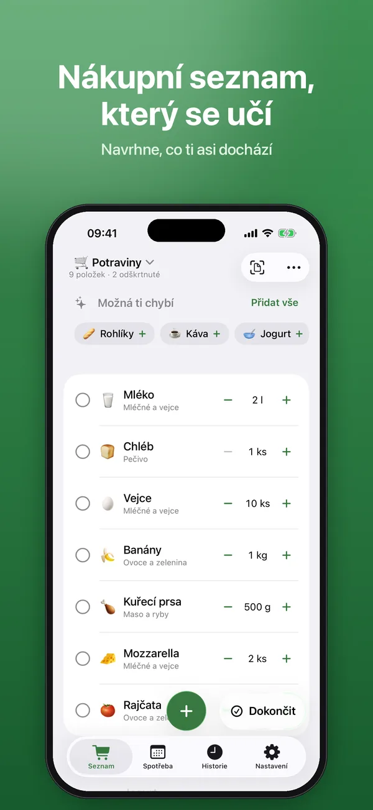
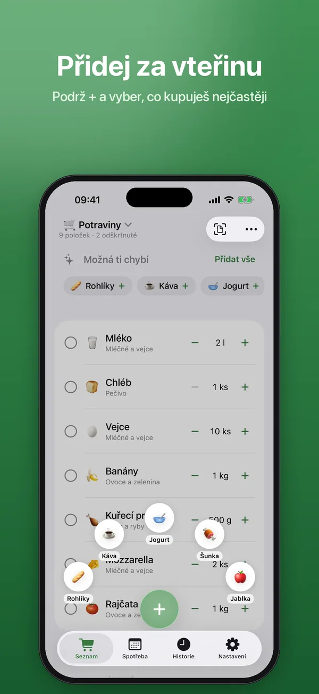
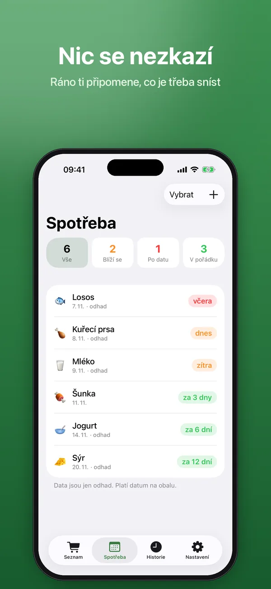
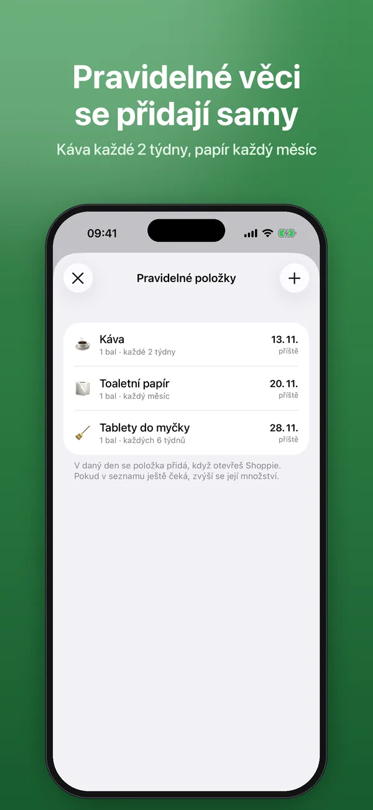
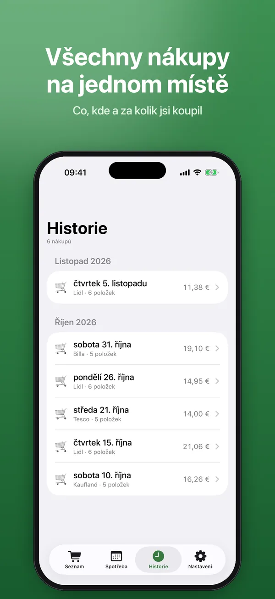

Ukázka
Jak to vypadá





Funkce
Co Shoppie umí
Rychlé přidávání
Ťukněte na + a napište, co je potřeba. Shoppie zná asi 540 běžných produktů a sám je zařadí do kategorie. Přidáte i množství.
Kolečko oblíbených
Podržte + a vyberte z kolečka, co kupujete nejčastěji. Co kolečko nabízí, si nastavíte sami.
Ví, co vám dochází
Shoppie se učí z vašich nákupů a navrhne, co asi bude potřeba koupit.
Sken účtenky
Vyfoťte účtenku a Shoppie rozpozná produkty i ceny včetně slev. Přímo v iPhonu, i offline.
Spotřeba
Koupené potraviny se objeví samy i s datem spotřeby. Ráno vám připomene, co je potřeba sníst, a potraviny po datu může sám odstranit.
Pravidelné položky
Káva každé 2 týdny, papír každý měsíc. Ve zvolený den se přidají do seznamu samy.
Záruky
Záruky i s fotkou účtenky na jednom místě. Před koncem záruky dostanete připomínku.
Společná domácnost
Pozvěte rodinu přes iCloud. Změny v seznamech vidí všichni hned.
Historie a víc seznamů
Všechny nákupy s obchodem a počtem položek. Přetažením doprava položku znovu přidáte. Seznamů můžete mít víc.
iPhone Duo
Navrženo i pro iPhone Duo
Posouvejte dál a rozložte ho. Shoppie se z vnějšího displeje přesune na velký vnitřní displej.
Na rozloženém iPhonu Duo využije Shoppie celý velký vnitřní displej.
Detaily
A ještě
- Slovenština, čeština, angličtina
- Tmavý režim
- Velké písmo a VoiceOver
- Režim na šířku
- iPhone Duo
- Synchronizace přes iCloud
- Úvodní průvodce s animacemi
- Bez reklam a registrace
Soukromí
Vaše data patří jen vám
Shoppie nesbírá žádná data. Žádné účty, reklamy ani sledování. Vše je ve vašem iPhonu a ve vašem iCloudu.
Ochrana soukromíPlány
Co chystáme
Shoppie se pořád zlepšuje. Tohle je naše cesta – čím dál, tím víc se ztrácí v mlze.
-
Dostupné nyní
Verze 1.0
Společný nákupní seznam pro celou domácnost s rychlým přidáváním, návrhy podle vašich nákupů, skenováním účtenek, Spotřebou a zárukami.
-
Připravujeme
Widget na ploše
Svůj nákupní seznam uvidíte a položky odškrtnete přímo z plochy iPhonu, bez otevírání aplikace.
Poznámky k položkám
K položce si budete moci připsat, jakou značku či příchuť koupit, aby v obchodě nevznikl omyl.
Přehled nákupů
Uvidíte, co a jak často kupujete a kolik jste utratili podle naskenovaných účtenek.
-
Později
Režim v obchodě
Když přijdete do obchodu, seznam se přizpůsobí nakupování a seřadí položky podle toho, jak procházíte obchodem.
Nákup na zamčené obrazovce
Zbývající položky uvidíte a odškrtnete i bez odemknutí telefonu.
Ceny a rozpočet
Zjistíte, kolik vás nákup asi vyjde a jak se vám daří dodržet měsíční rozpočet na potraviny.
-
…a to, co navrhnete vy
Máte nápad? Napište nám.
Zdarma
Stáhněte si Shoppie
Shoppie je dostupný v App Store pro iPhone. Zdarma, bez reklam a bez registrace.